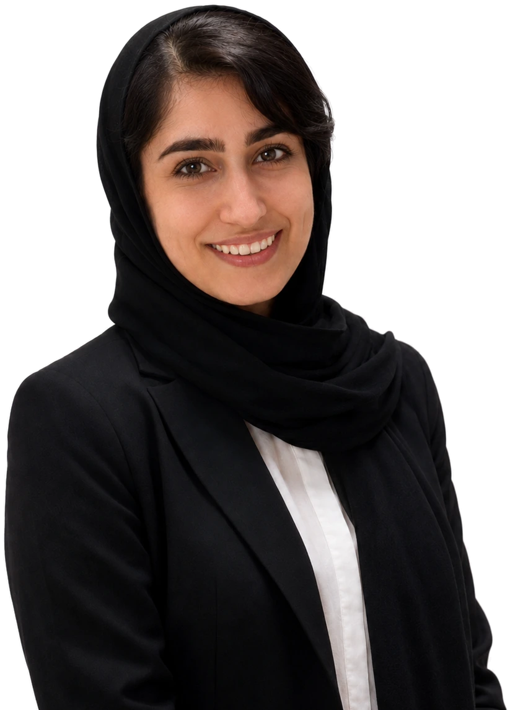

کودکان اوتیسم
سابقهی کار با کودکان طیف اوتیسم در حوزهی ارتباط و تعامل، تنظیم حسی، مهارتهای اجتماعی و کارهای روزمرهی زندگی. کار با ساختار روشن، پیشبینیپذیر کردن محیط و ساختن پلی میان کودک و آدمهای اطرافش.

دربارهی ما
موسس مجموعه و کاردرمانگر ذهنی کودکان
کد نظام پزشکی: ک‑د ۳۲۸۹
این مجموعه به سرپرستی مهرناز افشار، کاردرمانگر ذهنی کودکان، شکل گرفته است؛ کاردرمانگری با بیش از هفت سال سابقهی کار با کودکان و با تمرکز بر کودکان اوتیسم، کودکان دارای ADHD و کودکانی که با اختلالات یادگیری دستوپنجه نرم میکنند.
سخن موسس
وقتی کارم را با کودکان شروع کردم، یک چیز خیلی زود برایم روشن شد: بیشتر پدر و مادرهایی که روبهرویم مینشستند، از کودکشان خسته نبودند — از نداشتن یک نقشهی روشن خسته بودند. یا شنیده بودند «صبر کنید، خودش درست میشود»، یا فهرست بلندی از تمرین گرفته بودند بدون اینکه کسی گفته باشد از کجا باید شروع کنند.
این مجموعه را برای همان نقشه ساختم. برای اینکه هر خانوادهای که از این در وارد میشود بداند کودکش الان کجا ایستاده، قدم بعدی چیست و از کجا بفهمد که آن قدم برداشته شده است.
در این سالها با کودکان طیف اوتیسم، کودکان دارای بیشفعالی و نقص توجه، و کودکانی که با خواندن و نوشتن و ریاضی درگیر بودند کار کردهام. هرکدامشان چیزی به من یاد دادهاند؛ مهمترینش این بوده که هیچ کودکی دلش نمیخواهد عقب بماند. اگر جایی گیر کرده، یعنی ما هنوز ابزار درستش را پیدا نکردهایم.
قول من به شما ساده است: صادقانه میگویم چه کاری از کاردرمانی برمیآید و چه کاری برنمیآید، و تا وقتی کودک شما در این مسیر است، تنهایتان نمیگذارم.
هیچ دو کودکی شبیه هم نیستند، پس ما هم هیچ برنامهی درمانی را از روی برنامهی کودک دیگری نمینویسیم. کار ما همیشه از یک ارزیابی دقیق شروع میشود: اینکه کودک در چه کارهایی توانمند است، کجا گیر میکند و آن گیر از کجا میآید. تا وقتی این تصویر روشن نشود، هر تمرینی فقط حدس است.
بعد از ارزیابی، یک برنامهی اختصاصی مینویسیم که هدفهایش برای کودک قابلدسترس باشد — نه آنقدر آسان که چیزی یاد نگیرد، نه آنقدر سخت که خسته شود. جلسهها را در قالب بازی پیش میبریم، چون بازی زبان طبیعی کودک است و چیزی که در بازی یاد گرفته شود، بیرون از اتاق درمان هم میماند.
و مهمتر از همه: والدین بخشی از تیم درماناند، نه تماشاچی آن. کودک هفتهای یک یا دو ساعت با ماست و بقیهی هفته با شما؛ برای همین در پایان هر جلسه تمرینهای خانگی ساده و روشن به شما میدهیم تا مسیر در خانه ادامه پیدا کند.
در این سالها بیشترین تمرکز کار خانم افشار روی سه گروه بوده است؛ گروههایی که هرکدام روش، صبر و ابزار خودشان را میخواهند.
سابقهی کار با کودکان طیف اوتیسم در حوزهی ارتباط و تعامل، تنظیم حسی، مهارتهای اجتماعی و کارهای روزمرهی زندگی. کار با ساختار روشن، پیشبینیپذیر کردن محیط و ساختن پلی میان کودک و آدمهای اطرافش.
سابقهی کار با کودکان دارای بیشفعالی و نقص توجه؛ تقویت توجه پایدار، کنترل تکانه، تنظیم رفتار و مهارتهای اجرایی مثل برنامهریزی، نوبتگیری و به پایان رساندن کارها.
تجربه در درمان اختلالات یادگیری کودکان؛ مشکلات خواندن، نوشتن و ریاضی همراه با کار روی ادراک بینایی، ادراک شنیداری، حافظهی کاری و دستورزی — یعنی همان پایههایی که یادگیری روی آنها ساخته میشود.
کاردرمانی جسمی روی بدن کار میکند: قدرت عضله، دامنهی حرکت، تعادل و راه رفتن. کاردرمانی ذهنی کودکان روی مهارتهایی کار میکند که یادگیری و زندگی روزمره بر آنها سوار است: توجه، حافظه، ادراک بینایی و شنیداری، دستورزی و آمادهسازی برای نوشتن، مهارتهای اجتماعی و تنظیم رفتار. هدف این است که کودک بتواند در خانه، مدرسه و جمع همسالان کارهای سنّ خودش را انجام دهد.
نشانههای رایج: تکلیف دهدقیقهای یک ساعت طول میکشد، مداد را درست نمیگیرد یا خیلی زود از نوشتن خسته میشود، حروف را قرینه مینویسد، دستور چندمرحلهای را نیمهکاره رها میکند، در بازی جمعی نوبت نمیگیرد، یا معلم از تمرکز و رفتار او گلایه دارد. دیدن چند مورد از اینها بهمعنای تشخیص نیست، اما دلیل خوبی برای یک جلسهی ارزیابی است.
از سنین پیش از دبستان تا پایان دبستان بیشترین اثر را دارد، چون مغز کودک در این سالها انعطاف بیشتری دارد. برای کودکان کوچکتر، کار عمدتاً به شکل آموزش و مشاورهی والدین پیش میرود. ارزیابی زودهنگام هیچوقت زود نیست.
پاسخ صادقانه این است که پیش از ارزیابی نمیشود عدد داد. طول مسیر به سن کودک، نوع مشکل، شدت آن و مهمتر از همه به انجامشدن تمرینهای خانگی بستگی دارد. آنچه از ابتدا مشخص میکنیم، هدفهای کوتاهمدت و بازهی بازبینی است تا در هر مرحله بدانید کجای مسیر ایستادهاید.
بله. علاوه بر جلسههای حضوری، کاردرمانی ذهنی کودکان آنلاین در سراسر ایران برگزار میشود؛ با ارزیابی آنلاین، برنامهی اختصاصی و پیگیری تمرینهای خانگی. در صفحهی مربوط توضیح دادهایم جلسه چطور برگزار میشود و برای چه کودکانی مناسب است.
تعیینکننده. کودک هفتهای یک یا دو ساعت با درمانگر است و بقیهی هفته با شما. به همین دلیل در پایان هر جلسه تمرینهای خانگی ساده و روشن به شما داده میشود و اجرای همانهاست که سرعت پیشرفت را میسازد.
کاردرمانگر مهرناز افشار کد نظام پزشکی ک‑د ۳۲۸۹ — کاردرمانی ذهنی کودکان